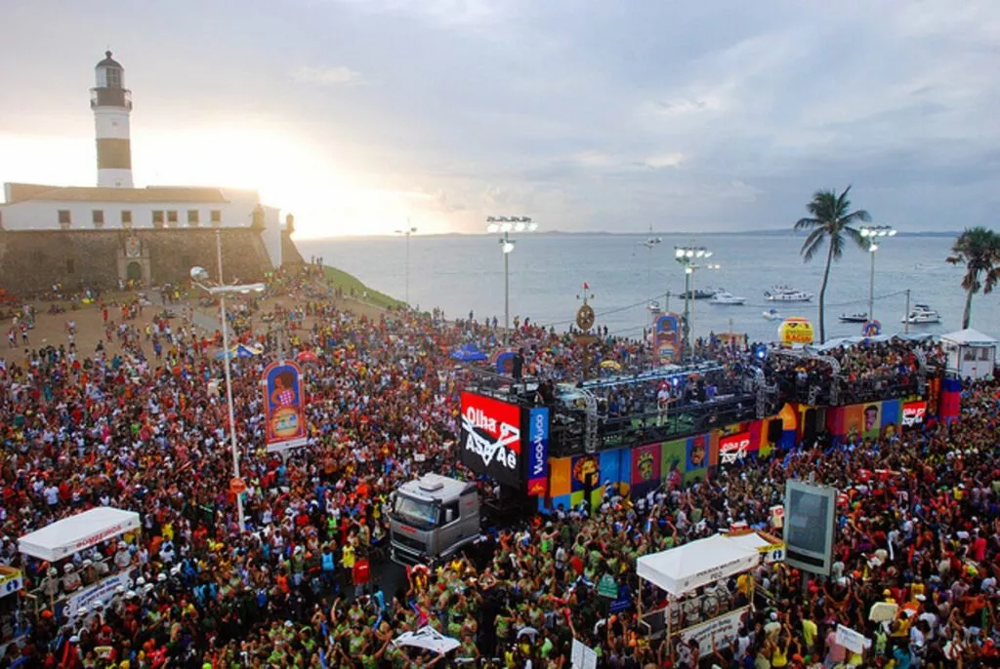

Circuito Dodô:
Barra - Ondina

Com um percurso de aproximadamente 4,5 km, o circuito Dodô/Barra Ondina liga as praias da Barra e Ondina.
O circuito dura aproximadamente 5 horas e costuma contar com os grandes camarotes do Carnaval e famosas atrações como Chiclete com Banana, Claudia Leitte, Ivete Sangalo, Tomate, Daniela Mercury, Banda Eva, entre outros. Os famosos arrastões, que marcam o encerramento da folia, também são realizados no percurso.
Como surgiu após o Circuito Campo Grande, é considerado novo e representa qualidade em relação à estrutura, programação e organização. Com camarotes badalados, shows entre a passagem dos trios e blocos, buffet, acesso privado à praia e blocos uniformizados, o Circuito Barra Ondina/Dodô é para muitos o principal circuito do carnaval de Salvador.
Alguns dos trios que costumam animar o Circuito Barra Ondina no Carnaval de Salvador são Camaleão, Balada, Crocodilo, Muzenza, Cortejo Afro, Araketu, Vem Sambar, Coruje, Meu e Seu, entre outros.
Programação
Abertura do Carnaval: 16/02 (quinta)
16:00 – IVETE SANGALO
16:30 – SAULO
16:45 – CLAUDIA LEITTE
17:00 – PARANGOLÉ
17:15 – XANDDY HARMONIA
17:45 – JP ESTOURADO
18:00 – BELL MARQUES
18:30 – IZA / CARLINHOS BROWN E CONVIDADOS
19:00 – BANDA EVA
19:30 – O KANNALHA E PABLO VITTAR
19:45 – WILSINHO KRAYCHETE (WK)
20:00 – LEO SANTANA
20:15 – LINCOLN
20:30 – TIMBALADA
20:45 – LUDMILLA
21:00 – CHICLETE COM BANANA
21:15 – BABADO NOVO
21:30 – PATRULHA DO SAMBA
21:45 – PIPOCA DO CHEIRO
22:00 – HUANNA
22:15 – TATAU
22:30 – LARISSA LUZ E CONVIDADOS
22:45 – DAVID MORAES
23:00 – RAFA E PIPO
23:15 – A DAMA
23:30 – ARAKETU
23:45 – GILMELÃNDIA
00:00 – ODOBAN
00:15 – AFROCIDADE
00:30 – GRUPO MAQUINA DO TEMPO
00:45 – MAKONNEM TAFARI / DJ AKANI E CONVIDADOS


Programação: 17/02 (Sexta)
14:30h MARCIA SHORT / ANA MAMETTO / CARLA VISI
14:45h TRIO TIK TOK – TIMBALADA,LUISA SONZA E CONVIDADOS
15:00h TRIO – LINCOLN
15:15h TRIO – PARANGOLÉ
15:30h TRIO – PSIRICO
15:45h TRIO – BABY-LÉGUAS / UNIVERSITARIO
16:00h VUMBORA BELL MARQUES
16:30h BLOCO NANA LEO SANTANA
17:00h TIMBALADA / BLOW OUT CLAUDIA LEITTE
17:30h BLOCO D+ / EVA – BANDA EVA
18:00h FISSURA – TOMATE
18:30h TRIO – DANIELA MERCURY
18:45h TRIO – PIPOCA DO CHEIRO
19:00h TRIO CARLINHOS BROWN
19:15h TRIO – O POLÊMICO
19:30h TRIO – PABLO E LUIZA
19:45h BLOCO EU VOU – ANITTA
20:00h TÔ LIGADO – PATRULHA DO SAMBA
20:15h TRIO SOLANGE ALMEIDA
20:30h TRIO KART LOVE
20:45h TRIO – O KANNALHA
21:00h TRIO – IGOR KANNÁRIO
21:15h TRIO – LÁ FURIA
21:30h SIRI COM TODI (SEM CORDAS) PAPAZONI
21:45h BLOCO DOS VAQUEIROS FULÔ DE MANDACARÚ / GUITO / JAPINHA CONDE E CONVIDADOS
22:00h TRIO – ESCANDURRAS
22:15h TRIO – FILHOS DA BAHIA
22:30h TRIO – O POETA
Programação – Sábado (18/02)
10:00h TIO PAULINHO / TIO ELÉTRICO COM PARTICIPAÇÃO DE MARIANA SILVA
14:30h MEU AMOR VOLTO JÁ MINITRIO BAIANO
14:45h TRIO – DANIEL VIEIRA
15:00h TRIO – THIAGO AQUINO
15:15h TRIO – PSIRICO
15:30h TRIO BT – PARANGOLÉ
15:45h CORUJA – IVETE SANGALO
16:15h VUMBORA – BELL MARQUES
16:45h BLOCO NANA – LEO SANTANA
17:15h TIMBALADA – TIMBALADA
17:45h FISSURA FILHOS DE JORGE E DH8
18:15h PIPOCA DO ALOK – DJ ALOK
18:30h TRIO – MAJOR LAZER (ATTOOXXA)
18:45h O VALE ALINNE ROSA
19:15h TRIO – DANIELA MERCURY
19:30h TÔ LIGADO PATRULHA DO SAMBA
19:45h SIRI COM TODI (SEM CORDAS) ATILA LIMA
20:00h TRIO – LINCOLN
20:15h TRIO – HIAGO
20:45h TRIO – MAGARY LORD
21:00h ARLINDINHO E EDUARDINHO FM
21:15h TARRINDO DE Q – O POLÊMICO
21:30h AMBIENTAL E ECOSSISTEMA
21:45h TRIO – PAGODART
22:00h TRIO JÚLIO MADEIRADA
22:15h TRIO – COMCAR DIEGO VIEIRA
Programação: 19/02 (Domingo)
09:30h CID GUERREIRO DE DEUS E OUTROS
14:30h PUTITO REX – PUTITO REX
14:45h TRIO – SEU MAXIXE
14:45h TRIO – SEU MAXIX
16:00h CAMALEÃO – BELL MARQUES
16:30h FECUNDANÇA / LARGADINHO – CLAUDIA LEITTE
17:00h DAQUELE JEITO – XANDDY HARMONIA
17:30h ME ABRAÇA – DURVAL LELYS
18:00h TRIO – PSIRICO
18:15h CROCODILO – DANIELA MERCURY
18:45h TIMBALADA – CARLINHOS BROWN
19:15h AGRADA GREGOS – CARLA CRISTINA
19:45h TRIO ARMANDINHO DODÔ E OSMAR
20:00h PROJETO NOVO TRIO – GUGA MEYRA
20:15h CORTEJO AFRO – GRUPO CORTEJO AFRO
20:45h TRIO – AILA MENEZES
21:00h ECOLÓGICO MEIO AMBIENTE -ROMA NEGRA
21:15h TÊ TÊ TÊ -7KASSIO
A MULHERADA – BANDA A MULHERADA
21:45h TRIO – CRISTINE CARDOSO
22:00h TRIO – ÁGUA FRESCA
22:15h TRIO – TAYRONE
23:00h TRIO – MR ARMENG
23:15h TRIO – COMCAR – ANIA RIVER
Programação – Segunda (20/02)
15:30h TRIO – TH
15:45hTRIO – KART LOVE
16:00h CAMALEÃO – BELL MARQUES
16:30h FILHOS DE GANDHY – BANDA SHOW GANDHY
17:00h FILHAS DE GANDHY
17:30h FECUNDANÇA / CORUJA – IVETE SANGALO
18:00h DAQUELE JEITO – XANDDY HARMONIA
18:30h ME ABRAÇA – DURVAL LELYS
19:00h TRIO ARMANDINHO DODÔ E OSMAR
19:15h TRIO – CARLA CRISTINA
19:30h CROCODILO – DANIELA MERCURY
20:00h LARGADINHO / O VALE – ALINNE ROSA
20:30h PROJETO NOVO TRIO – DJ PEDRO CHAMUSCA
20:45h CORTEJO AFRO – GRUPO CORTEJO AFRO
21:15h TRIO – LÁ FURIA
21:30h BUZANFAN DE GERÔNIMO – GERÔNIMO
21:45h VEM SAMBAR – SAMBA DO PRETINHO
22:15h JAKÉ – BANDA COISA DE ACENDER / OS BLOGUEIROS
22:30h MUZENZA – BANDA AFRO MUZENZA
22:45h ECOLÓGICO MEIO AMBIENTE DJ ALEXXA / DEU SAMBA
23:00h TRIO – WILSON CAFÉ
23:15h TRIO – LUANA MONALISA
23:30hTRIO – MÁRCIA CASTRO
23:45h TRIO – AFROCIDADE
00:00h TRIO – TAYRONE
00:15h TRIO – COMCAR SAMBA DO PRETINHO
Programação – Terça (21/02)
15:30h MICROTRIO IVAN HUOL
15:45h TRIO – JUAN E RAVENA
16:00h CAMALEÃO – BELL MARQUES
16:30h LARGADINHO – CLAUDIA LEITTE
17:00h JAKÉ – ALICE MORAES /DOUGLAS GURY / BEIJO NA BOCA / BANDA JAKÉ
17:30h BLOCO UAU – BABADO NOVO
18:00h TRIO FEEERVO – BAILINHO DE QUINTA
18:15h TRIO – LUIZ CALDAS
18:30h TRIO – XAMÃ
18:45h TRIO ARMANDINHO DODÔ E OSMAR
19:00h TRIO – ESCANDURRAS
19:15h TRIO – TIMBALADA
19:30h BANANA REGGAE
19:45h A MULHERADA – BANDA A MULHERADA
20:00h TRIO – LEO SANTANA
20:15h TÊ TÊ TÊ – 7KASSIO
20:15h BLOCO DO CAJÁ – SWING DO T10
20:30h BLOCO EXCLUSIVA – ENTRE NO CLIMA E CONVIDADOS
20:45h TRIO – LINCOLN
21:00h TRIO – HIAGO
21:15h TRIO – RAFA GOUVEIA
21:30h TRIO – LÁ FURIA
21:45h PROJETO AXÉ DAS ANTIGAS SR. WILSON
22:00h TRIO – ALINNE ROSA
22:15h TRIO – A DAMA
22:30h TRIO – COMCAR CIDA MARTINEZ
MENU